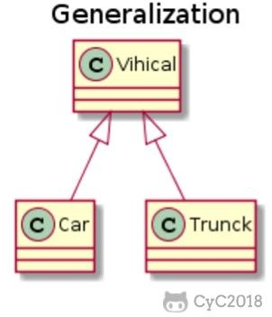
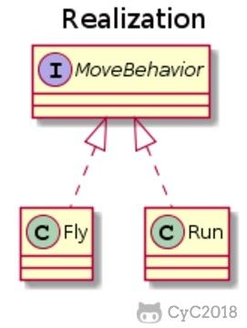
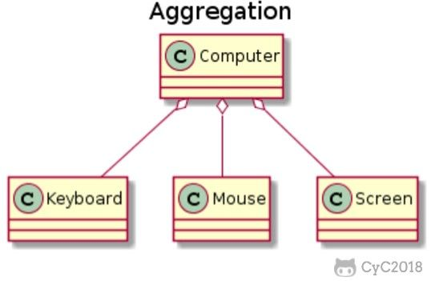
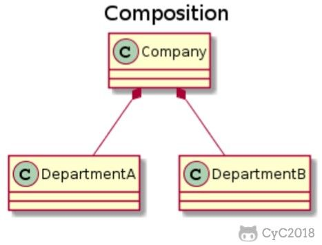
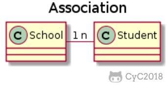
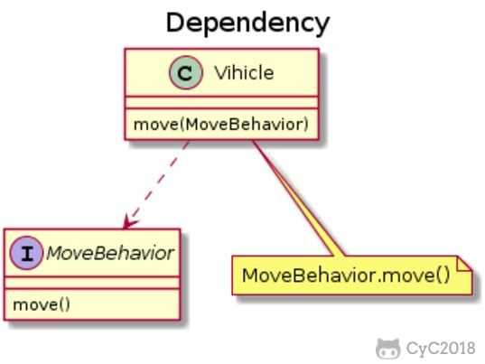

本人免费整理了Java高级资料，涵盖了Java、Redis、MongoDB、MySQL、Zookeeper、Spring Cloud、Dubbo高并发分布式等教程，一共30G，需要自己领取。
传送门：https://mp.weixin.qq.com/s/JzddfH-7yNudmkjT0IRL8Q
利用抽象数据类型将数据和基于数据的操作封装在一起，使其构成一个不可分割的独立实体。数据被保护在抽象数据类型的内部，尽可能地隐藏内部的细节，只保留一些对外的接口使其与外部发生联系。用户无需关心对象内部的细节，但可以通过对象对外提供的接口来访问该对象。
优点：
以下 Person 类封装 name、gender、age 等属性，外界只能通过 get() 方法获取一个 Person 对象的 name 属性和 gender 属性，而无法获取 age 属性，但是 age 属性可以供 work() 方法使用。
注意到 gender 属性使用 int 数据类型进行存储，封装使得用户注意不到这种实现细节。并且在需要修改 gender 属性使用的数据类型时，也可以在不影响客户端代码的情况下进行。
public class Person {
private String name;
private int gender;
private int age;
public String getName() {
return name;
}
public String getGender() {
return gender == 0 ? "man" : "woman";
}
public void work() {
if (18 <= age && age <= 50) {
System.out.println(name + " is working very hard!");
} else {
System.out.println(name + " can't work any more!");
}
}
}
继承实现了 IS-A 关系，例如 Cat 和 Animal 就是一种 IS-A 关系，因此 Cat 可以继承自 Animal，从而获得 Animal 非 private 的属性和方法。
继承应该遵循里氏替换原则，子类对象必须能够替换掉所有父类对象。
Cat 可以当做 Animal 来使用，也就是说可以使用 Animal 引用 Cat 对象。父类引用指向子类对象称为 向上转型 。
Animal animal = new Cat();
多态分为编译时多态和运行时多态：
运行时多态有三个条件：
下面的代码中，乐器类（Instrument）有两个子类：Wind 和 Percussion，它们都覆盖了父类的 play() 方法，并且在 main() 方法中使用父类 Instrument 来引用 Wind 和 Percussion 对象。在 Instrument 引用调用 play() 方法时，会执行实际引用对象所在类的 play() 方法，而不是 Instrument 类的方法。
public class Instrument {
public void play() {
System.out.println("Instument is playing...");
}
}
public class Wind extends Instrument {
public void play() {
System.out.println("Wind is playing...");
}
}
public class Percussion extends Instrument {
public void play() {
System.out.println("Percussion is playing...");
}
}
public class Music {
public static void main(String[] args) {
List<Instrument> instruments = new ArrayList<>();
instruments.add(new Wind());
instruments.add(new Percussion());
for(Instrument instrument : instruments) {
instrument.play();
}
}
}
Wind is playing...
Percussion is playing...
以下类图使用 PlantUML 绘制，更多语法及使用请参考：http://plantuml.com/ 。
用来描述继承关系，在 Java 中使用 extends 关键字。

@startuml
title Generalization
class Vihical
class Car
class Trunck
Vihical <|-- Car
Vihical <|-- Trunck
@enduml
用来实现一个接口，在 Java 中使用 implements 关键字。

@startuml
title Realization
interface MoveBehavior
class Fly
class Run
MoveBehavior <|.. Fly
MoveBehavior <|.. Run
@enduml
表示整体由部分组成，但是整体和部分不是强依赖的，整体不存在了部分还是会存在。

@startuml
title Aggregation
class Computer
class Keyboard
class Mouse
class Screen
Computer o-- Keyboard
Computer o-- Mouse
Computer o-- Screen
@enduml
和聚合不同，组合中整体和部分是强依赖的，整体不存在了部分也不存在了。比如公司和部门，公司没了部门就不存在了。但是公司和员工就属于聚合关系了，因为公司没了员工还在。

@startuml
title Composition
class Company
class DepartmentA
class DepartmentB
Company *-- DepartmentA
Company *-- DepartmentB
@enduml
表示不同类对象之间有关联，这是一种静态关系，与运行过程的状态无关，在最开始就可以确定。因此也可以用 1 对 1、多对 1、多对多这种关联关系来表示。比如学生和学校就是一种关联关系，一个学校可以有很多学生，但是一个学生只属于一个学校，因此这是一种多对一的关系，在运行开始之前就可以确定。

@startuml
title Association
class School
class Student
School "1" - "n" Student
@enduml
和关联关系不同的是，依赖关系是在运行过程中起作用的。A 类和 B 类是依赖关系主要有三种形式：

@startuml
title Dependency
class Vihicle {
move(MoveBehavior)
}
interface MoveBehavior {
move()
}
note "MoveBehavior.move()" as N
Vihicle ..> MoveBehavior
Vihicle .. N
@enduml
简写全拼中文翻译SRPThe Single Responsibility Principle单一责任原则OCPThe Open Closed Principle开放封闭原则LSPThe Liskov Substitution Principle里氏替换原则ISPThe Interface Segregation Principle接口分离原则DIPThe Dependency Inversion Principle依赖倒置原则
修改一个类的原因应该只有一个。
换句话说就是让一个类只负责一件事，当这个类需要做过多事情的时候，就需要分解这个类。
如果一个类承担的职责过多，就等于把这些职责耦合在了一起，一个职责的变化可能会削弱这个类完成其它职责的能力。
类应该对扩展开放，对修改关闭。
扩展就是添加新功能的意思，因此该原则要求在添加新功能时不需要修改代码。
符合开闭原则最典型的设计模式是装饰者模式，它可以动态地将责任附加到对象上，而不用去修改类的代码。
子类对象必须能够替换掉所有父类对象。
继承是一种 IS-A 关系，子类需要能够当成父类来使用，并且需要比父类更特殊。
如果不满足这个原则，那么各个子类的行为上就会有很大差异，增加继承体系的复杂度。
不应该强迫客户依赖于它们不用的方法。
因此使用多个专门的接口比使用单一的总接口要好。
高层模块不应该依赖于低层模块，二者都应该依赖于抽象；
抽象不应该依赖于细节，细节应该依赖于抽象。
高层模块包含一个应用程序中重要的策略选择和业务模块，如果高层模块依赖于低层模块，那么低层模块的改动就会直接影响到高层模块，从而迫使高层模块也需要改动。
依赖于抽象意味着：
除了上述的经典原则，在实际开发中还有下面这些常见的设计原则。
简写全拼中文翻译LODThe Law of Demeter迪米特法则CRPThe Composite Reuse Principle合成复用原则CCPThe Common Closure Principle共同封闭原则SAPThe Stable Abstractions Principle稳定抽象原则SDPThe Stable Dependencies Principle稳定依赖原则
迪米特法则又叫作最少知识原则（Least Knowledge Principle，简写 LKP），就是说一个对象应当对其他对象有尽可能少的了解，不和陌生人说话。
尽量使用对象组合，而不是通过继承来达到复用的目的。
一起修改的类，应该组合在一起（同一个包里）。如果必须修改应用程序里的代码，我们希望所有的修改都发生在一个包里（修改关闭），而不是遍布在很多包里。
最稳定的包应该是最抽象的包，不稳定的包应该是具体的包，即包的抽象程度跟它的稳定性成正比。
包之间的依赖关系都应该是稳定方向依赖的，包要依赖的包要比自己更具有稳定性。